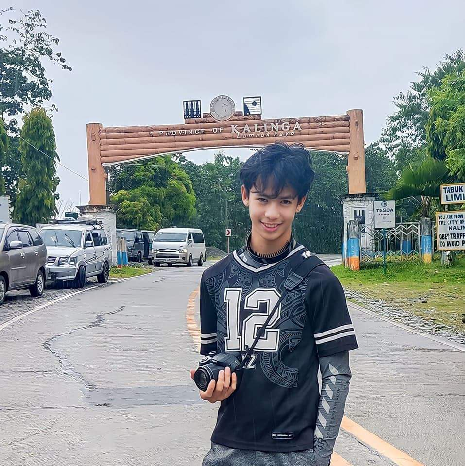

Austin M. William

Summary
As a freshman college Graduate, I am currently looking
for a part-time/ full-time job opportunity to test the
skills I have garnered as a student. My primary objective
is to leverage these experiences to refine my abilities
and gain a deeper insight into the intricacies inherent
to the industry.
Education
Kings College of The Philippines (2020-Present)
- Bachelor of Science in Information Technology (BSIT)
- Computer System Servicing (Nc1)
- Automotive Servicing (Nc1)
- Volunteered as a photographer on several events and programs
Puguis National High School (2017-2020)
- Attended leadership trainings and seminars
- Volunteered as a photographer in several Events and programs
- Supreme Student Government (SSG) Auditor
LongLong Elementary School (2009-2016)
- Scout Official for a Day (SOFAD) Municipal Budget Officer
- With honors
- Boy Scout of The Year
- Attended several Seminars and Leadership Training
- Silver Medalist in the 1st Strawberry Arnis Tournament
- Represented The school as a Photojournalist in different competitions
Work experiences
- JYC Marosans (Full-time) (March 2 – May 2, 2023)
- Staff
- Service crew
- Catering Crew
- Kitchen(Fryer)
- Afar Café Puguis Branch(Full-time) (May 15 – June 15, 2023)
- Barista
- Staff
- Service crew
- Afar Café Km4(Full-time) (June 16 – July 31, 2023)
- Barista
- Staff
- Service crew
Skills
- Basic computer Skills
- Basic Video Editing
- Basic Photoshop
- Computer Set up
- Experienced Photojournalist
- Driving
- Disciplined and a Team player
- Athletic
- Microsoft Applications
- Adobe
- Photoshop
- lightroom
- Premier Pro
- After Effects
- Willing to be trained
- Computer System Servicing (Nc1)
- Computer System Servicing (Nc2)
- Automotive Servicing (Nc1)
- Automotive Servicing (Nc2)
Awards and certifications
Other